In this project, I explore the role of frequency-based filtering in computer vision and computational photography. The objective is to understand how different components of an image—edges, gradients, fine details, and smooth structures—can be manipulated through convolution, Gaussian and Laplacian filtering, and frequency separation. Starting with simple gradient operators for edge detection, I extend the approach to derivatives of Gaussians to combine noise suppression and differentiation. From there, I investigate image sharpening with unsharp masking, the creation of hybrid images that change interpretation with viewing distance, and multiresolution blending inspired by Burt and Adelson’s spline method. By constructing Gaussian and Laplacian stacks of both images and masks, I achieve seamless composites where transitions are smooth across frequency bands. This report is organized into sections covering the theory of filters and stacks, the implementation of hybrid images, the multiresolution blending procedure, and the resulting visual outcomes along with reflections on the effectiveness and limitations of these techniques.
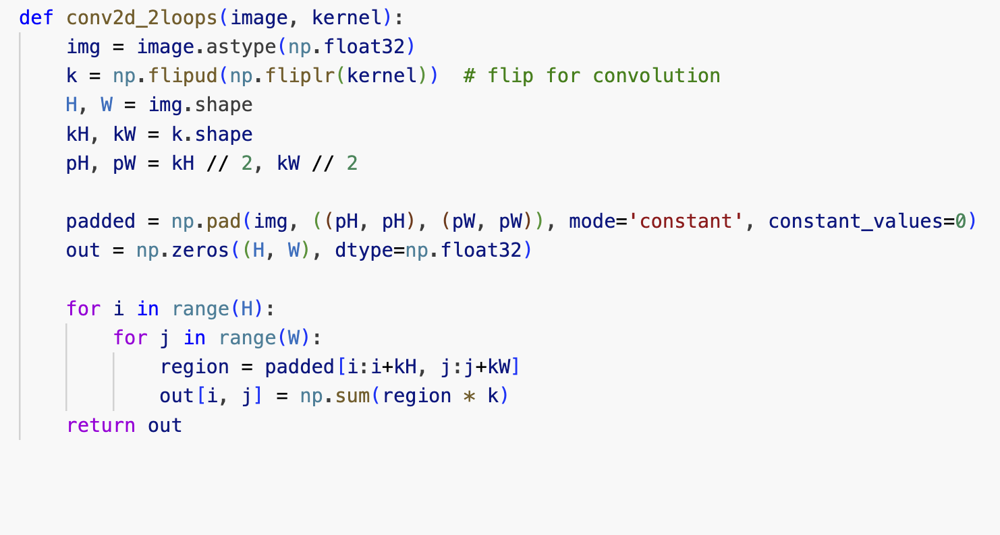
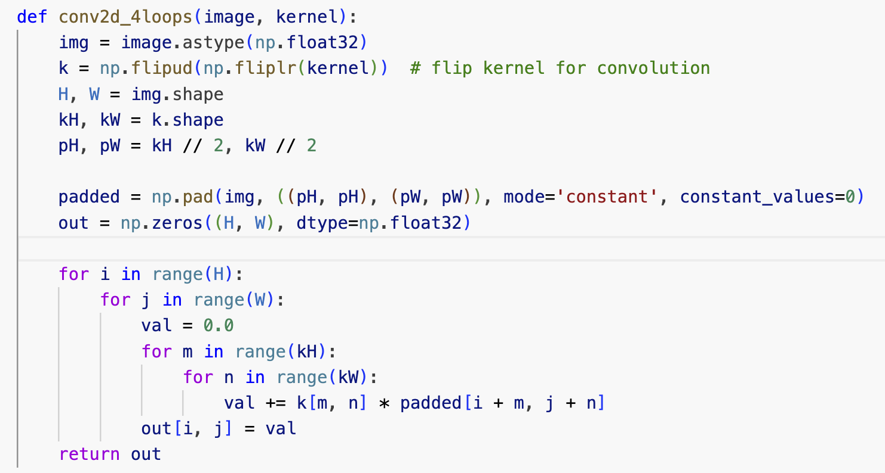
conv2d_4loops (left figure) computes the convolution by iterating over every position of the image and, within that, looping again over every element of the filter to multiply and accumulate values one by one. The right function (conv2d_2loops) also loops over image positions, but instead of looping over the filter elements it extracts the relevant patch of the padded image and multiplies it with the filter in one step, summing all contributions at once. This makes the second function noticeably faster, since it avoids two extra layers of iteration in Python and instead relies on array operations that are executed much more efficiently. It can be used in this section.
Partial derivative in x and y
The partial derivatives are computed by convolving the image with small filters (Dx and Dy) that approximate differences in the horizontal and vertical directions. The resulting images highlight intensity changes: the derivative in x emphasizes vertical edges, while the derivative in y emphasizes horizontal edges.
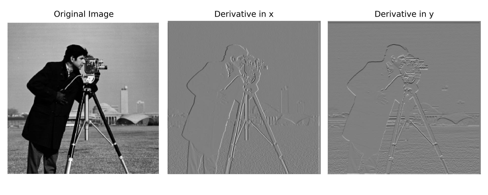
Gradient magnitude
The gradient magnitude is computed by combining the horizontal and vertical derivatives using the formula \sqrt{(dI/dx)^2 + (dI/dy)^2}. The resulting image highlights edges regardless of their orientation, showing where intensity changes are strongest in the scene.
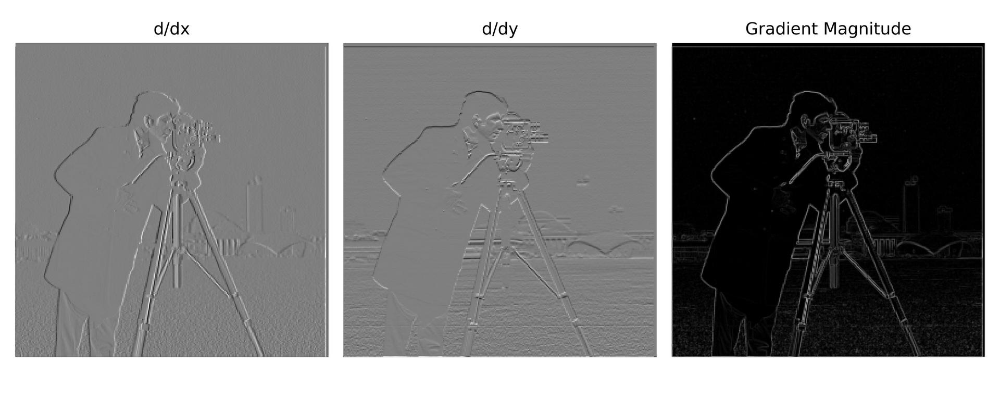
Edge image
The edge image is obtained by thresholding the gradient magnitude, turning pixels above a chosen value white and the rest black. This highlights the most significant intensity changes in the scene as crisp, binary edges.
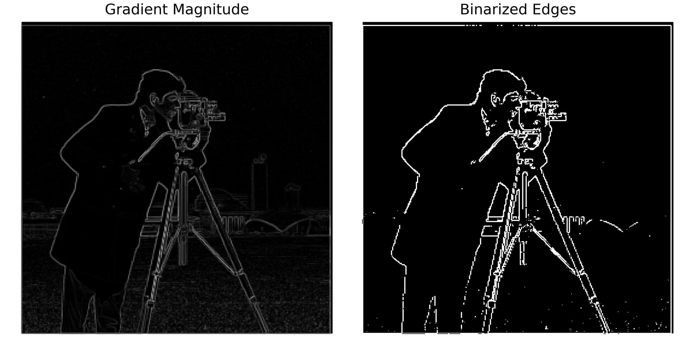
With Gaussian smoothing, the gradient magnitude image becomes much cleaner, and many of the small noisy responses in flat regions disappear. The binary edge map highlights only the stronger, more coherent edges, resulting in clearer outlines compared to the noisier result without smoothing.
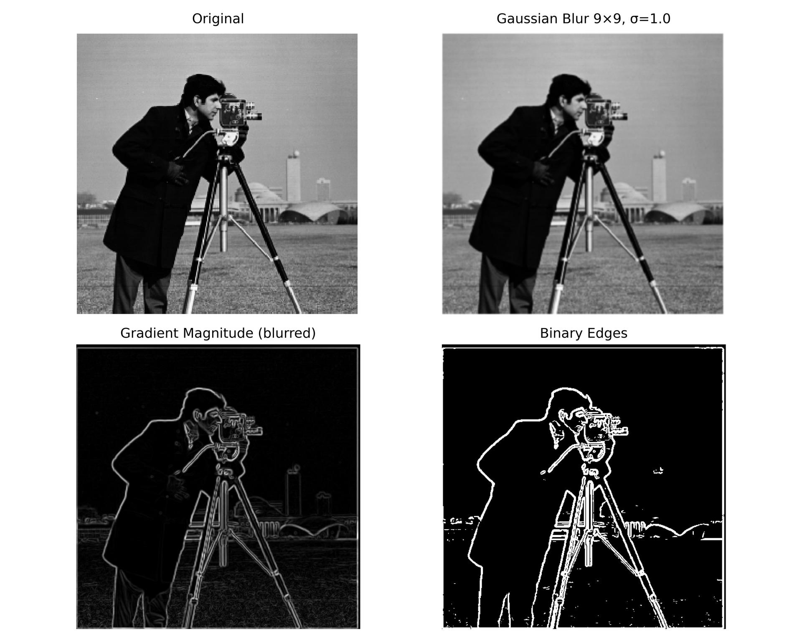
The top row shows the filters: a 9×9 Gaussian kernel (left) used for smoothing, and the two derivative-of-Gaussian filters (middle and right) created by convolving the Gaussian with the horizontal and vertical difference operators. The bottom row shows their application to the image: the original input (left), the gradient magnitude computed with the DoG filters (middle), and the corresponding binarized edge map (right). These results closely match the earlier two-step approach of smoothing followed by differentiation, confirming that combining them into a single filter produces the same outcome.
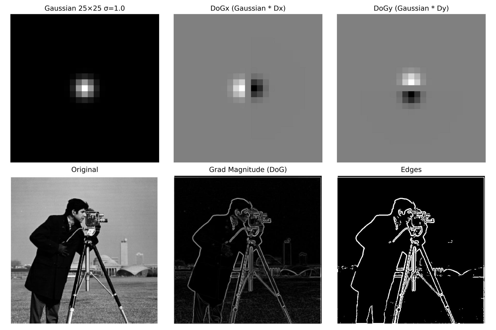
The images show the original input alongside visualizations of gradient orientations. In the HSV representation, the hue encodes the direction of edges while the saturation and value highlight their strength, allowing edge orientations across the image to be perceived as different colors.
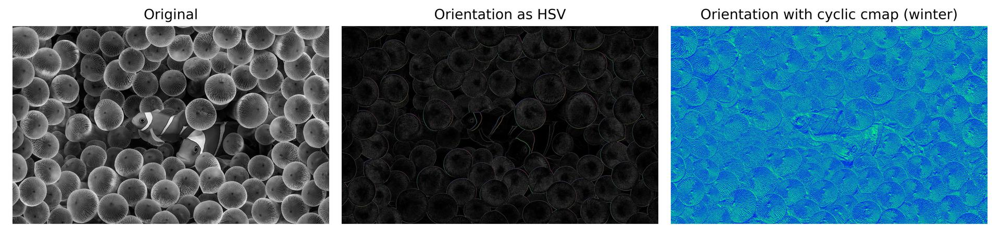
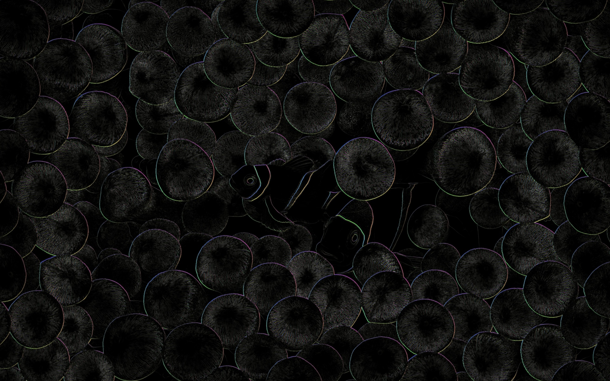
The three panels illustrate the unsharp masking process for sharpening an image. On the left is the original blurry photo of the Taj Mahal. In the center is the unsharp mask kernel, which is essentially a Gaussian blur combined with a high-pass component—it subtracts the smoothed version of the image from the original so that only high-frequency details remain. On the right is the sharpened result, where these high frequencies have been added back to the original image, making edges and textures appear crisper and more defined. Implementation-wise, this is achieved by first convolving the image with a Gaussian filter, subtracting the blurred version from the original to isolate details, and then adding a scaled version of these details back to the image in a single convolution step.
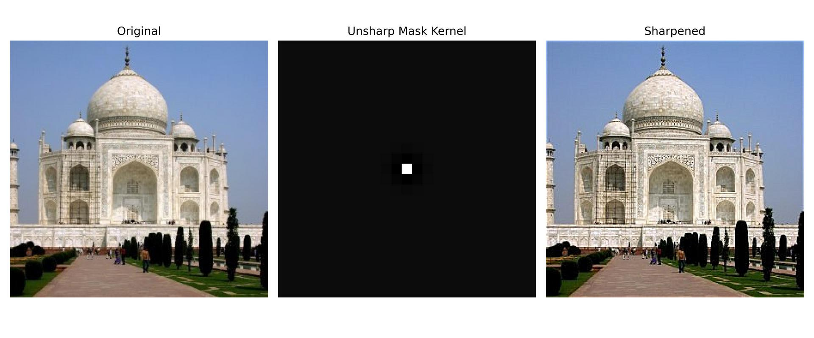
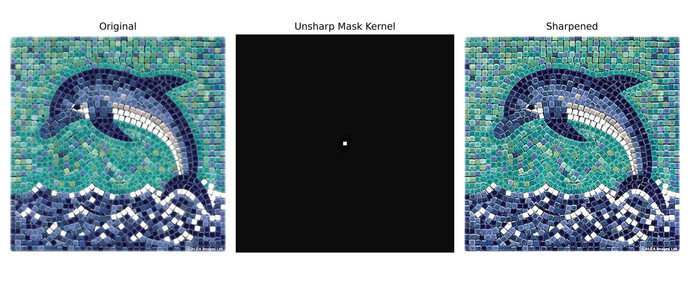
Here we created a hybrid image by combining two sources: one passed through a low-pass filter (Gaussian blur) to keep only its smooth, low-frequency content, and the other passed through a high-pass filter (original minus its blurred version) to retain only its fine details. These two filtered images are then added together to form a hybrid, which looks like one subject when viewed up close (because high frequencies dominate perception) and like another subject when viewed from afar (because only low frequencies remain visible). This technique follows the method described in the SIGGRAPH 2006 paper by Oliva, Torralba, and Schyns, and in the rest of the project I will experiment with different image pairs to produce hybrid illusions. The second row shows the Fourier domain analysis of each step. The log magnitude of the FFT of the two input images displays the frequency content of the originals. After filtering, the low-pass version shows energy concentrated near the center (indicating smooth content), while the high-pass version shows energy spread toward the edges (indicating fine details). The FFT of the hybrid demonstrates how both components coexist: central low frequencies come from the blurred image, while the outer high frequencies come from the sharpened details, confirming that the hybrid truly blends frequency bands from both sources.
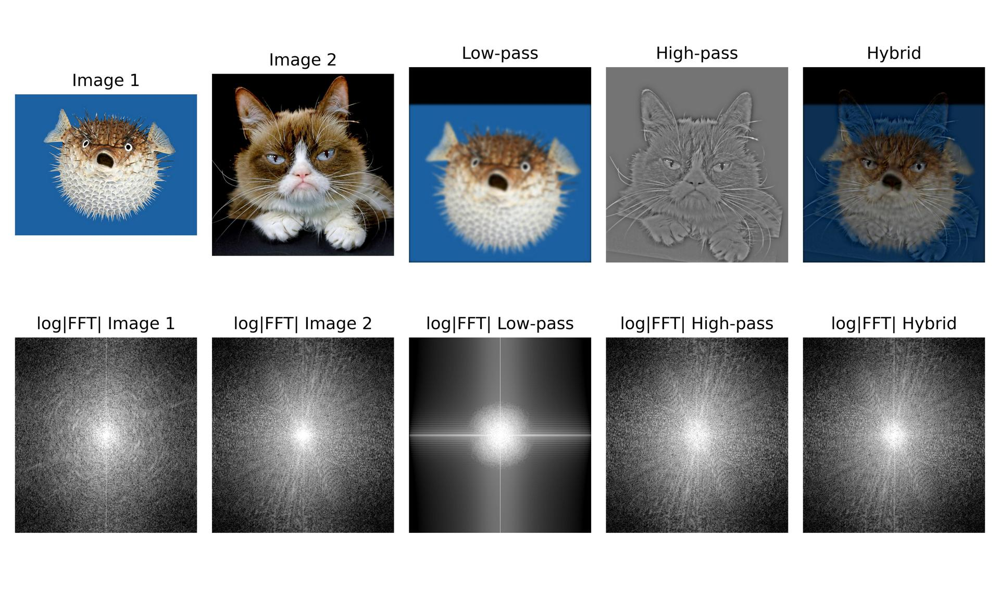
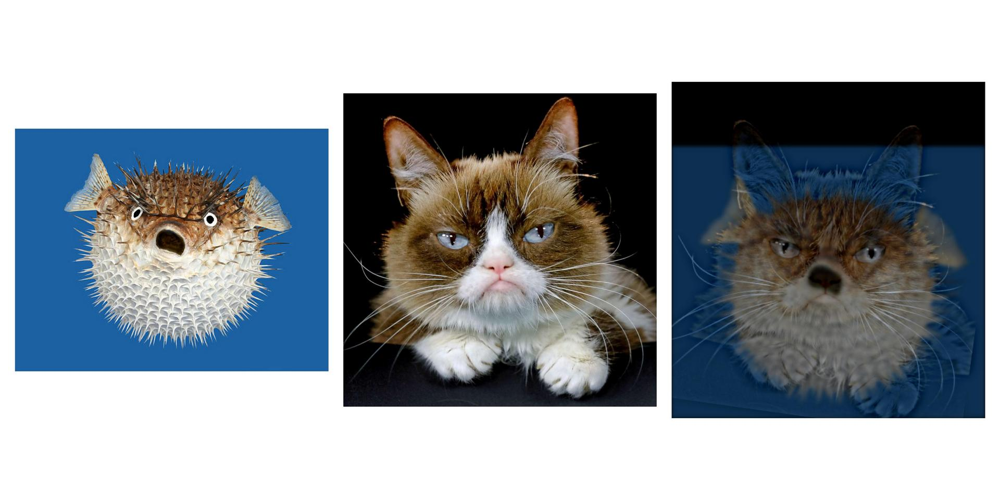
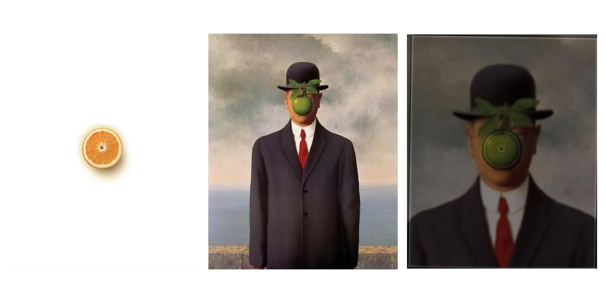
Bells and Whistles: In hybrid images, it generally works best to keep color information in the low-frequency component and use only grayscale for the high-frequency component. Human vision is more sensitive to color in smooth, low-frequency regions, while fine details and edges are primarily perceived through intensity differences. If the high-frequency image includes color, it can introduce distracting artifacts and reduce the clarity of the illusion. By contrast, adding color to the low-frequency image makes the hybrid appear more natural and stable, while the high-frequency details remain sharp and effective at close viewing distances.
A Gaussian stack is a set of images where each level is a progressively blurred version of the original, created by repeatedly applying a Gaussian filter without reducing resolution. This captures lower and lower frequencies while keeping the image size fixed.
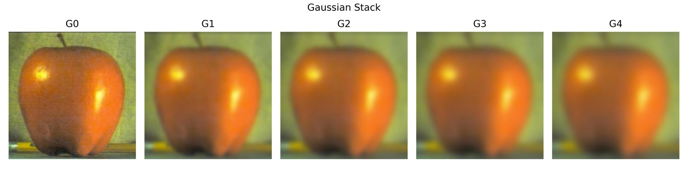
A Laplacian stack is derived from the Gaussian stack by subtracting each blurred level from the previous one, isolating the band-pass details (edges and textures) that vanish between levels. The final level is the coarsest Gaussian, holding the lowest-frequency structure.
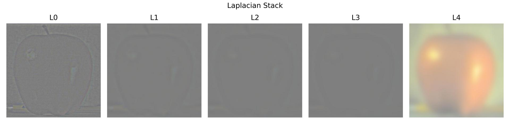
When I first generated the Laplacian stack, the results did not look like the illustrations from the book. This is because the raw Laplacian values can be both positive and negative, often with small ranges, making the images appear very dark and not easily interpretable. To improve visualization, I applied a simple min–max normalization to each level:
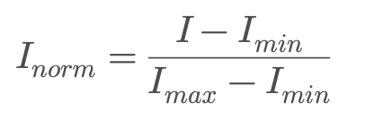
which rescales the values into the [0,1] range for display. This does not change the underlying data, but stretches the contrast so that the details at each scale become visible. With this adjustment, the Laplacian stack images look much closer to the ones shown in the book, and the normalized version is displayed below.
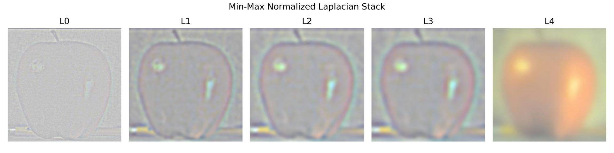
The full reference image from the book is shown below, and it will be explained in detail in the next section.
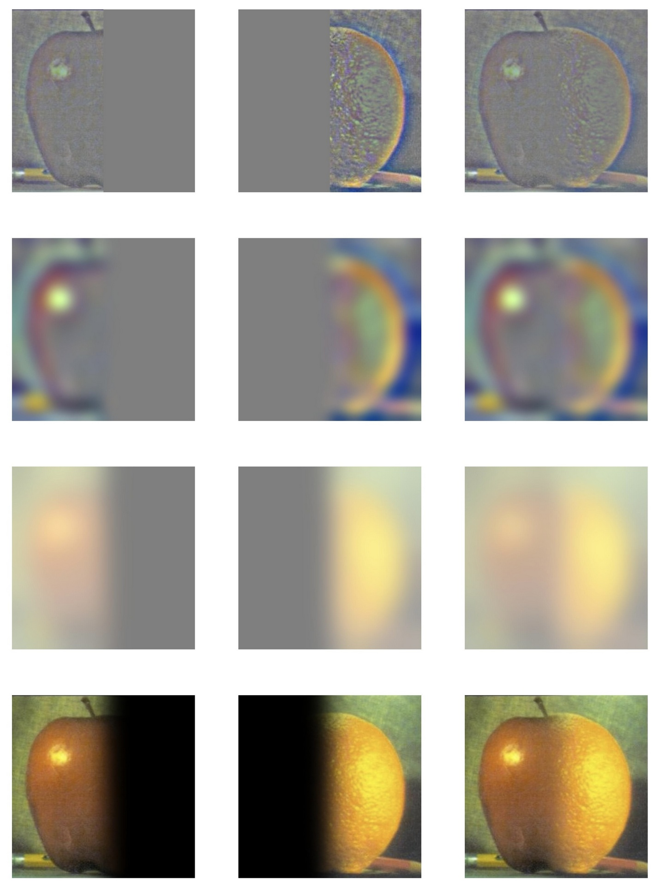
In multi-resolution blending, two images are combined seamlessly by operating at different frequency bands rather than directly in pixel space. The process begins by constructing Laplacian stacks for the two input images, which decompose each image into band-pass layers capturing details at multiple scales, along with a Gaussian stack for a mask that determines which regions of each image contribute to the blend. At every level, the Laplacian details from each image are weighted by the corresponding blurred mask, ensuring that transitions occur smoothly across frequencies. Finally, the blended Laplacian stack is collapsed back into a full-resolution image, producing a result without harsh seams. The Laplacian stack visualization shows this step-by-step process: in each row, the apple (left) and the orange (middle) are weighted by the progressively blurred mask, and the right column shows the blended result for that level. Higher rows capture fine edges and details, while lower rows represent coarser color and structure. The bottom row shows the final recombined image, where the apple smoothly transitions into the orange, achieving the classic “Oraple” or Ears-Mars blend shown below.
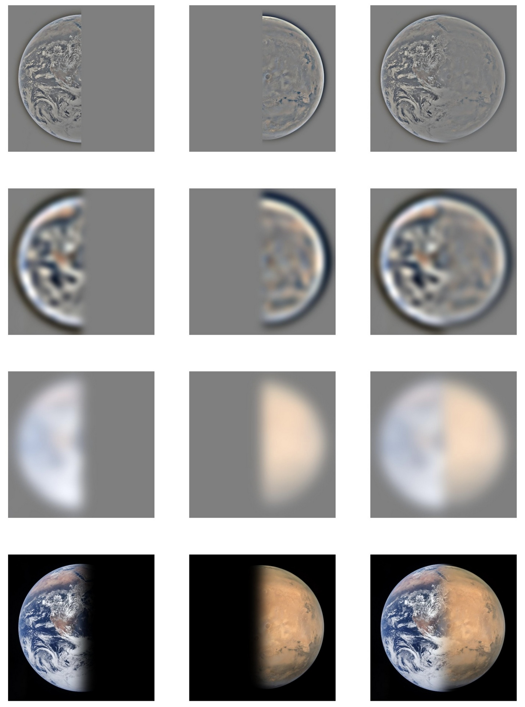
Mojave by night and day (MacOS wallpaper)
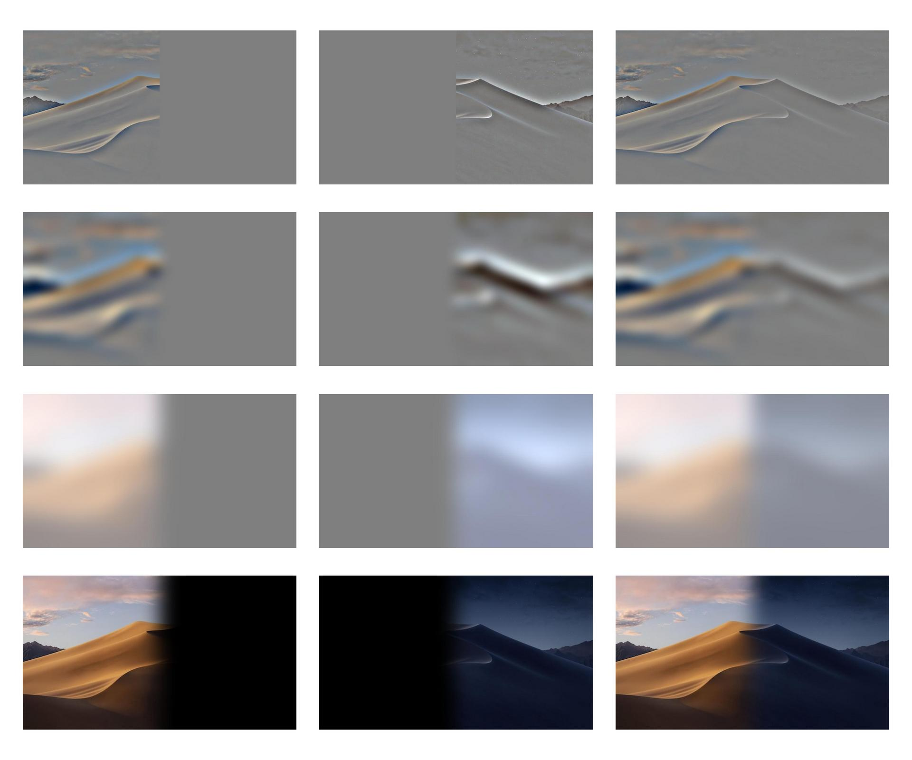
Old vs. new Ferrari
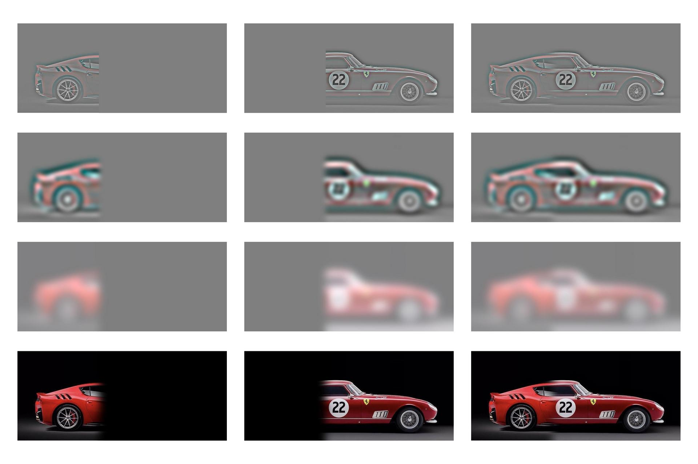
The melting Earth
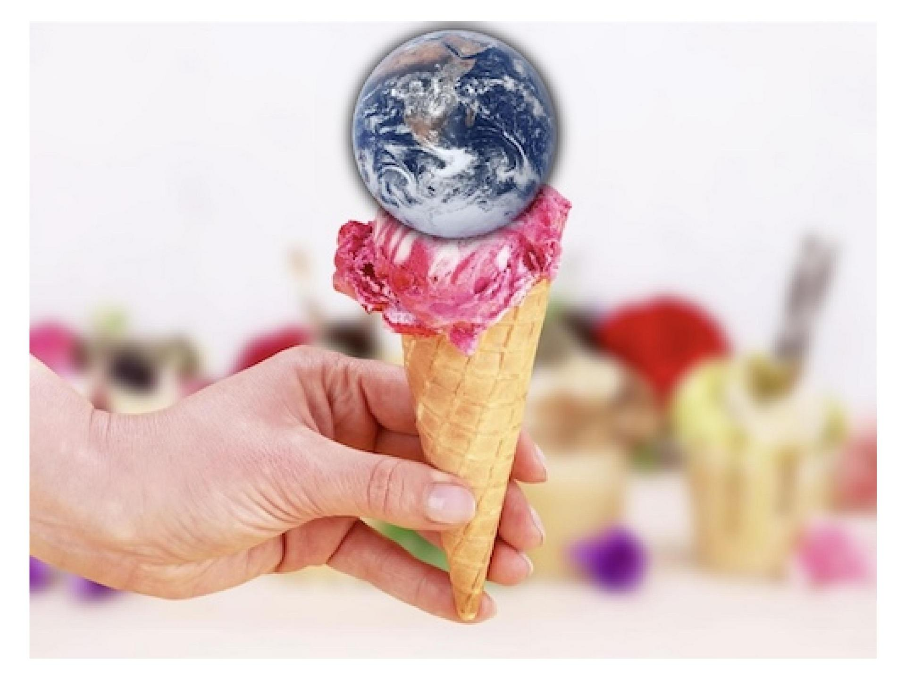
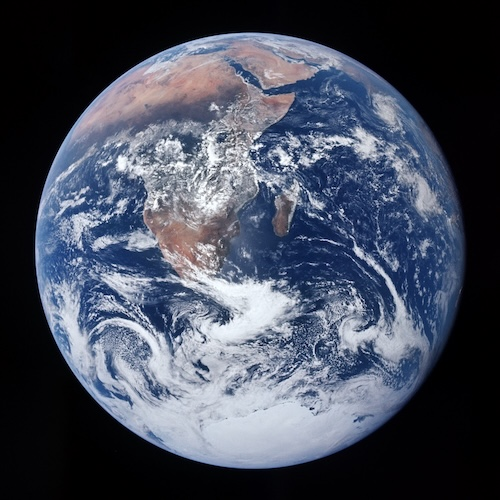
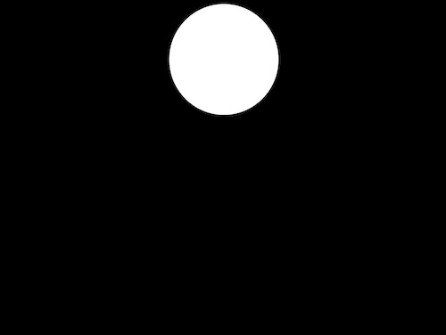
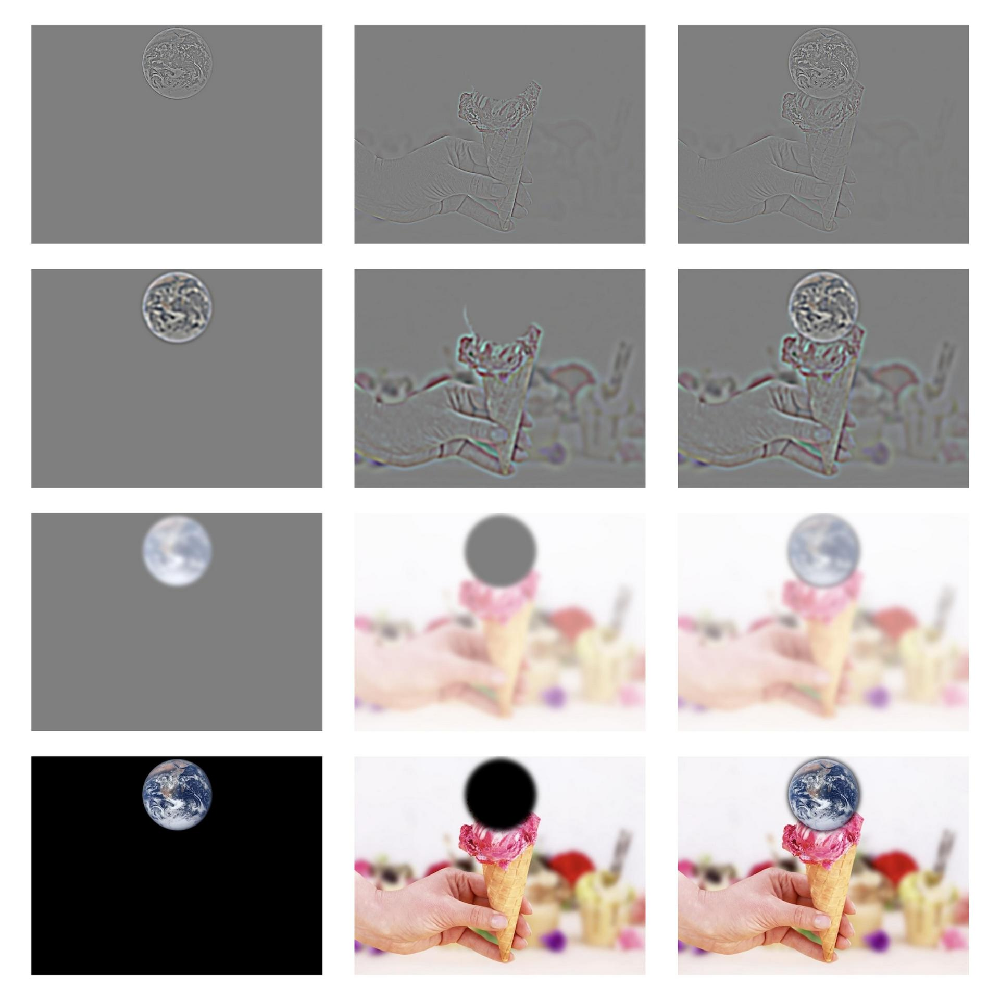
The most important thing I learned from this project is how powerful frequency-based representations are for understanding and manipulating images. By separating an image into low and high frequencies, I saw how different aspects of perception—smooth structures, colors, and fine details—can be isolated, enhanced, or combined in creative ways. Techniques like Gaussian and Laplacian stacks, unsharp masking, and hybrid images all build on this same idea, and working through them gave me an intuition for why the human visual system perceives images so differently depending on distance, scale, and frequency content. In addition I got much better in python programming and getting a feeling for gaussian filtern and theirs kernel size/variance in relation to the image size.